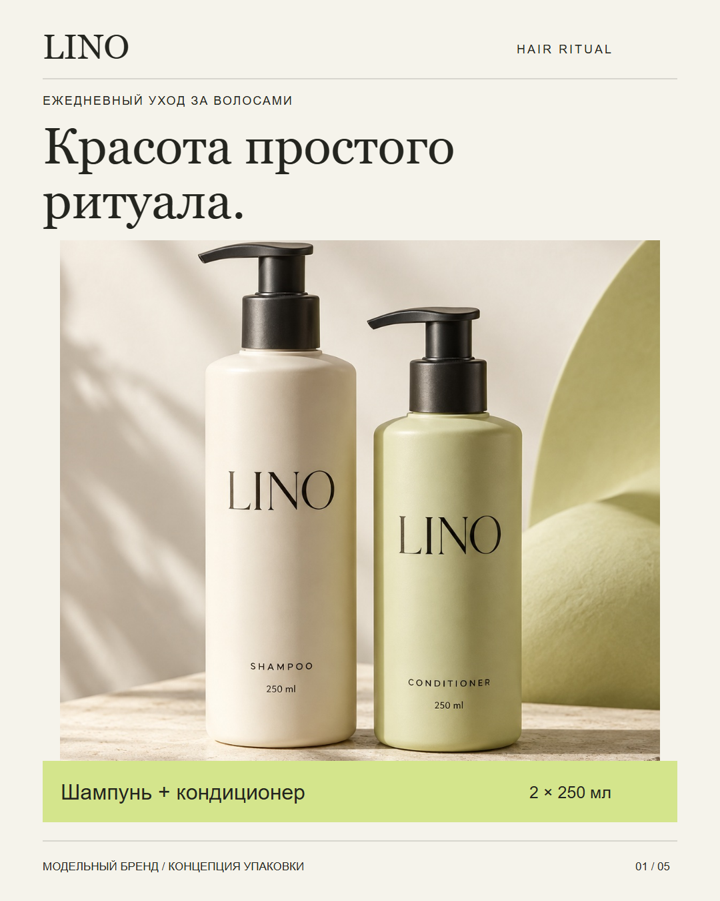

Обложка дуэта
01Продукт первым привлекает внимание. Название категории и объёмы читаются отдельно от фотографии.
Косметика для волос · модельный бренд
Предметный визуал и пять карточек, которые спокойно объясняют главное: что выбрать, как использовать и что входит в комплект.
Рассмотреть серию ↘
01 / Фотография как главный акцентЗадача
В галерее косметики важно быстро различить два средства и понять их роли. В модельном брифе LINO нет лечебных обещаний, сертификатов и цифр эффективности: фокус — на дуэте, понятной информации и последовательности ухода.
Порядок карточек повторяет вопросы покупателя: «Что это?» → «Что выбрать?» → «Какие компоненты?» → «Как применять?» → «Что в комплекте?»
Дизайн-система
Уход без
лишнего шума.
Редакционная антиква задаёт характер. Ясный гротеск отвечает за инструкции и характеристики.
01 / Один предметный визуалОбщая фотография сохраняет форму, материалы и брендинг упаковки на каждой карточке.
02 / Разные композицииОбложка, сравнение, информационный разворот и инструкция имеют собственную иерархию.
03 / Реальная редактируемостьТексты и графика остаются векторами. Фото встроено в SVG — исходники автономны.
Карточки / 01—05
Изображения открываются крупно.
Каждая карточка доступна в двух форматах.
Продукт первым привлекает внимание. Название категории и объёмы читаются отдельно от фотографии.
Две равнозначные колонки объясняют роли средств. Лайм поддерживает цвет кондиционера в упаковке.
Графит делает информационную карточку самостоятельной. Компоненты показаны без медицинских обещаний; модельный характер состава обозначен прямо.
Короткие команды и последовательная нумерация. Лаймовый фон выделяет практическую часть серии.
Два флакона с дозаторами и объём каждого средства. Характеристики вынесены в контрастный блок, а проектная оговорка остаётся видимой.
250 мл — объём каждого средства, выбранный для этого модельного проекта.
Комплект файлов
5 PNG для просмотра и 5 автономных SVG с редактируемыми текстами, встроенной фотографией и векторными плашками. Плюс контактный лист и README с проверками.
Скачать дизайн-кит ↓Описание файлов и QA ↗LINO — вымышленный бренд; это самостоятельный модельный проект, не заказ реального клиента. Фотография создана генерацией изображений. Упаковка, объёмы, компоненты и инструкция смоделированы. Реального продукта, сертификаций, клинических данных и результатов продаж за кейсом нет. Соответствие требованиям конкретного маркетплейса не проверялось. SVG не содержит встроенных шрифтов; фотография и надписи на самой упаковке — растровые.